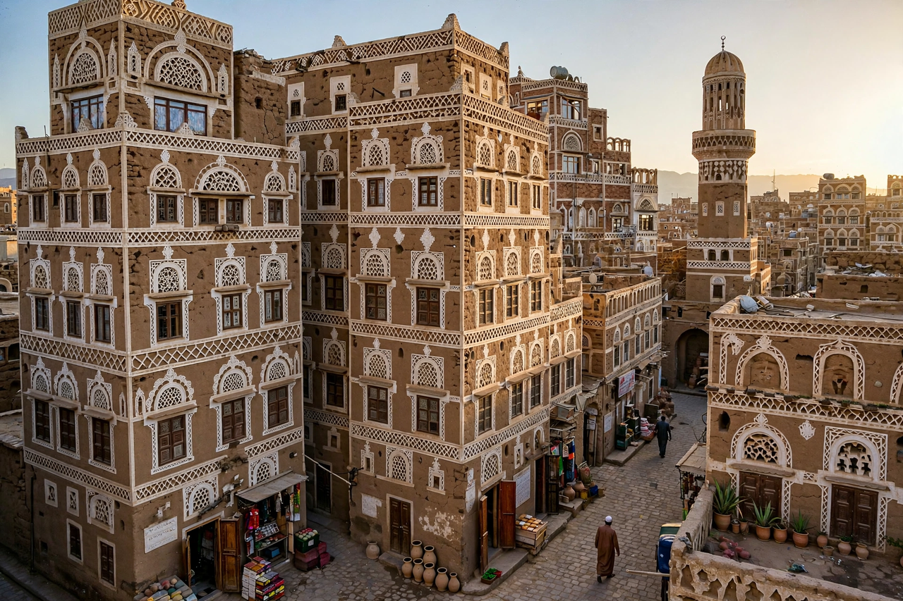

From Wikipedia, the free encyclopedia
| Republic of Yemen | |
 The Old City of Sanaa, a UNESCO World Heritage Site | |
| Capital | Sanaa (de facto seat of government contested since 2014; Aden is the temporary capital of the internationally recognised government) |
| Official language | Arabic |
| Religion | Islam (Sunni Shafi'i majority; Zaydi Shia minority) |
| Government | Unitary republic (disputed since 2014) |
| Unification | 22 May 1990 |
| Area | 527,968 km² (203,850 sq mi) |
| Population | About 34 million (2023 estimate) |
| Currency | Yemeni rial (YER) |
Yemen, officially the Republic of Yemen, is a country in West Asia. Located in the southern part of the Arabian Peninsula, it borders Saudi Arabia to the north, Oman to the northeast, the Red Sea to the west, and the Gulf of Aden and the Arabian Sea to the south. Yemen's territory includes the island archipelago of Socotra. Its capital and largest city is Sanaa. With a coastline of approximately 2,000 kilometres, Yemen controls the southern entrance to the Bab el-Mandeb strait, one of the world's most important shipping chokepoints.
Ancient Yemen was home to wealthy South Arabian kingdoms — Saba (Sheba), Ma'in, Qataban, Hadramawt and later Himyar — enriched by the frankincense and myrrh trade and by irrigation works such as the Marib Dam. The region's rulers adopted Judaism in the 4th century AD and then Christianity, before Islam arrived in the 7th century. Yemen was subsequently ruled by local dynasties including the Zaydi imams of the northern highlands, and parts were contested by the Ottomans and by the British, who from 1839 held Aden as a strategic port and coaling station.
In the 20th century the north became the Mutawakkilite Kingdom and, after a 1962 revolution and civil war, the Yemen Arab Republic. The south gained independence from Britain in 1967 as the People's Democratic Republic of Yemen, the Arab world's only Marxist state. The two Yemens unified on 22 May 1990 under President Ali Abdullah Saleh, but a southern secession attempt in 1994 was defeated by force. Saleh was driven from power in 2012 during the Arab Spring uprisings, succeeded by Abdrabbuh Mansur Hadi.
In 2014 the Houthi movement (Ansar Allah), a Zaydi revivalist group from the north, seized Sanaa; in March 2015 a Saudi-led coalition intervened militarily to restore the Hadi government. The ensuing war — fought also against al-Qaeda in the Arabian Peninsula and a revived southern separatist movement — fragmented the country and produced what the UN long described as the world's worst humanitarian crisis, with mass displacement, famine conditions, cholera outbreaks and widespread destruction of infrastructure. A UN-brokered truce in 2022 substantially reduced fighting, but a political settlement remained elusive. From late 2023, Houthi attacks on shipping in the Red Sea, declared in response to the war in Gaza, drew international military responses and disrupted global trade.
Yemen's terrain rises from coastal plains (the Tihama on the Red Sea) to a rugged highland massif — with Jabal an Nabi Shu'ayb, Arabia's highest peak at about 3,666 m — and descends eastward to the deserts of the Empty Quarter. The climate is mostly hot and arid, moderated in the western highlands, where terraced agriculture depends on seasonal rains. The island of Socotra, a UNESCO World Heritage Site, is famed for endemic species such as the dragon's blood tree.
Before the war Yemen was already the poorest country in the Arab world; oil and gas exports provided most government revenue, and agriculture employed the majority of the workforce, with qat — a mild stimulant leaf — a major cash crop chewed socially by many Yemenis. Yemen is the original home of coffee cultivation and of the port of Mocha, which gave its name to the coffee term. Yemeni architecture is distinctive: multi-storey tower houses of mud brick and stone, as in the old cities of Sanaa and Shibam ("the Manhattan of the desert"), both World Heritage Sites.